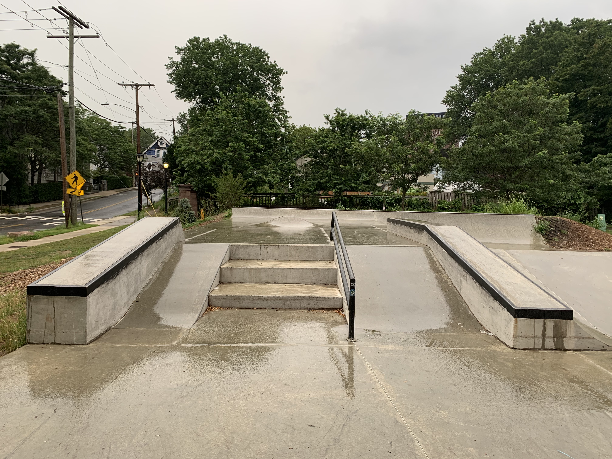

Platform
The platform is where a lot of the traffic of the park is centered at. All the half pipes point to this part of the park so you can build up speed from the top of tamps and then transition to ollying over the ramps, grinding over the corners or maybe even going down its own ramp to build up more speed. The platform also has an angled metal rail for those that want to get better at grinding rails.
 Previous page Take me there